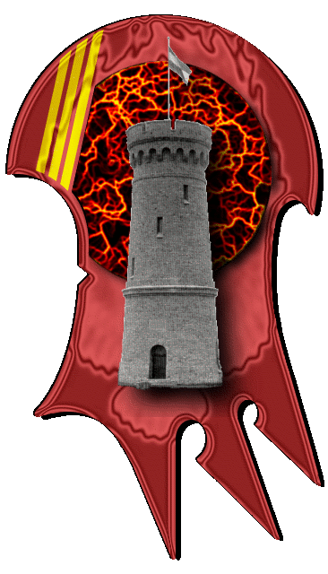

| Übersicht,
Anschläge und Stammtisch (RPG) |
|
Glücklichstes Paar der Scherbe (35  ) )
|
| Loriel de Demandolx (RIP) |
*stellt sich zusammen mit seiner Begleiterin im Arm auf das Podest in der Mitte des Platzes und ruft nach Aufmerksamkeit*
"Höret her Völker der Scherbe.
Hiermit geben wir, Lady Gil Aranel und Sir Loriel, Euch unsere Verlobung kund.
Die Sieben zeigten uns nach vielen Prüfungen den Weg zueinander...nun wollen wir Euch alle an unserem Glück teil haben lassen.
Als bald soll unsere Hochzeit stattfinden. Alle Freunde sind herzlichst eingeladen mitzufeiern. Es wird ein rauschendes Fest.
Wir sind überglücklich."
*küsst seine Verlobte, schaut sie sehr verliebt an, und steigt mit ihr vom Podest*
Sir Loriel,
Vorsteher von Catalia,
Priester im Dienste des einzig wahren Glaubens an Bendur,
Verlobter der reizenden Gil Aranel,
Diplomat des Reiches Narvalon
Zur 24. Stunde am 84.Dunkelfrost im Jahre 417 |
26.10.04 20:21
|
|
| Ahrsat Diago Kenastin (RIP) |
Der Winter ist noch gar nicht ganz zuende, schon liegt der Frühling in der Luft.
Ich wünsche euch alles gute für euren gemeinsamen Lebenslauf! Darauf einen Humpen!
Baron Ahrsat Diago Kenastin,
Vorsteher von Arcania,
Aussenpolitischer Sprecher der Hopfengarde
Zur 1. Stunde am 85.Dunkelfrost im Jahre 417 |
26.10.04 20:26
|
|
| Mayandra la Vega (RIP) |
Meine herzlichsten Glückwünsche an das Paar!
*verschwindet schnell um ein Hochzeitsgeschenk in Auftrag zu geben*
Baronesse Mayandra la Vega,
Vorsteherin von Kap der sieben Winde
Zur 1. Stunde am 85.Dunkelfrost im Jahre 417 |
26.10.04 20:26
|
|
| Yurian Steinbogen (RIP) |
Da muss ich meinen Kameraden recht geben. Da hellt sich der verfinsterte Dunkelfrost auf noch bevor er ganz zu Ende ist. Auch ich trinke ein, zwei Humpen auf Euch.
Alles gute für Euch!
Markgraf Yurian Steinbogen,
Vorsteher von Shen han Calhar,
Anführer der glorreichen Nation "Hopfengarde"
Zur 1. Stunde am 85.Dunkelfrost im Jahre 417 |
26.10.04 20:31
|
|
| Oren Ereliath (RIP) |
Entzückend!
Meine herzlichsten Glückwünsche an das liebevolle Paar.
*sich fragt was sie zur Hochzeit wohl anziehen wird*
Baronesse Oren Ereliath,
Vorsteherin von Arx Libertas,
Windsucherin der Atha´an Miere
Zur 1. Stunde am 85.Dunkelfrost im Jahre 417 |
26.10.04 20:32
|
|
| Sol Feuerschatten (RIP) |
Herzlichen Glückwunsch!
Sol Feuerschatten,
Priester im Dienste des einzig wahren Glaubens an Larja,
Gisir N`Vaelahrn - Schattenwächter
Zur 2. Stunde am 85.Dunkelfrost im Jahre 417 |
26.10.04 20:41
|
|
| Magicus von Gondolin (RIP) |
Herzlichen Glückwunsch dem glücklichen Paare!
~geht langsam wieder fort und fragt sich, wieso alle eine nette Frau finden, nur er nicht ;o) ~
Magicus
Zur 2. Stunde am 85.Dunkelfrost im Jahre 417 |
26.10.04 20:51
|
|
| Kungol Seebeißer (RIP) |
Ein schönen Paar seid ihr beide. Für die Zukunft wünsche ich euch viel Glück.
* Was für ein Glück dabei zu sein, als die beiden sich gefunden hatten *
Esnabur,
Hohepriester im Dienste des einzig wahren Glaubens an Bendur
Zur 4. Stunde am 85.Dunkelfrost im Jahre 417 |
26.10.04 21:11
|
|
| Freya san Gordar (RIP) |
meine Gratulation euch beiden
Freya Thorbjørnsdoter,
Schönste Frau der Scherbenwelten,
Verlobte des ehrenwerten Das Grauen
Zur 4. Stunde am 85.Dunkelfrost im Jahre 417 |
26.10.04 21:12
|
|
| Háril Glyndil (RIP) |
Möge Tura ihre Hand schützend über diese Beziehung halten und so für Harmonie, Wohlstand und Zufriedenheit sorgen.
Piéròtéss Elcârnaé,
Kardinälin im Dienste des einzig wahren Glaubens an Tura,
Verlobte der reizenden Kassandra Alfiriel
Verkünderin des Glaubens an Tura
Zur 5. Stunde am 85.Dunkelfrost im Jahre 417 |
26.10.04 21:23
|
|
| Gwain Gond (RIP) |
Herzlichen Glückwunsch euch Beiden zu diesem mutigen Schritt. Mögen die Götter euch wohlgesinnt sein und einer endlosen Beziehung nicht im Wege stehen.
Gwain Gond
Zur 6. Stunde am 85.Dunkelfrost im Jahre 417 |
26.10.04 21:36
|
|
| Liliana (RIP) |
Oh das ist ja wunderbar :) Lori und Gil ... wie schön *freut sich*
Alles, alles, alles Gute für euch!!!
Liliana
Zur 6. Stunde am 85.Dunkelfrost im Jahre 417 |
26.10.04 21:46
|
|
| Mayandra la Vega (RIP) |
Oren, ich kenne da eine wunderbare Schneiderin *tuschel*
Stickereien...
*flüster*
...wilde Seide *weitertuschel*
Baronesse Mayandra la Vega,
Vorsteherin von Kap der sieben Winde
Zur 7. Stunde am 85.Dunkelfrost im Jahre 417 |
26.10.04 21:48
|
|
| Dalamar (RIP) |
Meine herzlichen Glückwünsche!
Sir Dalamar,
Vorsteher von Glanz des Saphirs
Zur 7. Stunde am 85.Dunkelfrost im Jahre 417 |
26.10.04 21:49
|
|
| Marduc (RIP) |
Meine Gratulation euch Beiden
Markgraf Marduc,
Anführer der glorreichen Nation "Reich Narvalon"
Zur 7. Stunde am 85.Dunkelfrost im Jahre 417 |
26.10.04 21:57
|
|
| Divayth Fyr (RIP) |
Auch von mir alles Gute für euer zukünftiges Zusammenleben, auf das ihr ein warmes Heim habt und wunderschöne Kinder großzieht.
Divayth Fyr,
Kardinal im Dienste des einzig wahren Glaubens an Urvan
Zur 7. Stunde am 85.Dunkelfrost im Jahre 417 |
26.10.04 21:58
|
|
| Mariana (RIP) |
Auch meinen allerherzlichsten Glückwunsch dem jungen glücklichen Paar.
Möge Larja das Glück beschützen und erhalten.
*lächelnd denkt: seltsam dass doch jedes glückliche Paar meint es sei das glücklichste der Scherbe, dabei kann doch niemand glücklicher sein als ich.*
Freifrau Valeria,
Vorsteherin von Murindil Lysilia,
Verlobte des ehrenwerten Theoderich Buchenholz
Zur 7. Stunde am 85.Dunkelfrost im Jahre 417 |
26.10.04 21:59
|
|
| Taranis (RIP) |
Glückwunsch euch beiden .. *Seuftzend den Platz verlässt*
Freiherr Taranis von Rhiannon,
Vorsteher von Canas en airita Maki
Zur 8. Stunde am 85.Dunkelfrost im Jahre 417 |
26.10.04 22:05
|
|
Gnaar
  |
Herzlichen Glückwunsch und alles Gute für die Zukunft euch beiden!
Sir Gnaar,
Kardinal im Dienste des einzig wahren Glaubens an Pheron
Zur 8. Stunde am 85.Dunkelfrost im Jahre 417 |
26.10.04 22:15
|
|
| BlueFingers (RIP) |
Meine allerbesten Wünsche für Euch Beide.
Gil, halte mein allerliebstes Keksmonster in Ehren.
Lori, behandel Gil gut, sonst gibt es keine Kekse ;)
*geht schon mal, mit den anderen Halblingsbäckern den Entwurf für die bombastische Hochzeits-Kekstorte zu entwerfen*
Freifrau BlueFingers,
Vorsteherin von Skryll,
Erste Dame des Reiches Narvalon
Zur 9. Stunde am 85.Dunkelfrost im Jahre 417 |
26.10.04 22:26
|
|
Klaus Störtebeker
 |
Auch ich gratuliere herzlichst dem jungem Glück -
möge Bendur auf Eurem gemeinsamen Wege alle Wogen glätten & Euch sicher geleiten.
Sir Klaus Störtebeker,
Hohepriester im Dienste des einzig wahren Glaubens an Bendur
Verkünder des Glaubens an Bendur
Zur 10. Stunde am 85.Dunkelfrost im Jahre 417 |
26.10.04 22:37
|
|
| Tordhúr Dunkelschmied (RIP) |
Alles Gute euch beiden! :-)
Sir Tordhúr Dunkelschmied,
Vorsteher von Butterwiese,
Priester im Dienste des einzig wahren Glaubens an Urvan,
Oberster Handelsminister des Reiches Narvalon
Zur 11. Stunde am 85.Dunkelfrost im Jahre 417 |
26.10.04 22:48
|
|
| Bekki Rosenholz (RIP) |
Ach das ist aber eine schöne Nachricht..
Herzlichen Glückwunsch ihr zwei !!!!!!
Und alles alles erdencklich Gute und Liebe !!!
Baronesse Bekki Rosenholz,
Vorsteherin von Tadmor,
Ehefrau des ehrenwerten Keshan
Zur 11. Stunde am 85.Dunkelfrost im Jahre 417 |
26.10.04 22:54
|
|
| Thormay Macedon II (RIP) |
Auch von mir Alles Gute euch beiden!!
Und gleich noch ein Grund zum feiern, denn auch ich möchte gleich auf diesem Wege etwas bekannt geben:
Meine reizende Aithra und ich, Thormay Macedon II, haben uns zur 11. Stunde am 85. Dunkelfrost im Jahre 417 verlobt. Wir sind überglücklich das uns die Sieben zusammengeführt haben und wollen den gemeinsam unseren Scherbenweg bestreiten.
gez.
Thormay Macedon II,
Priester im Dienste des einzig wahren Glaubens an Urvan,
Botschafter des Ordens der Paladine,
Verlobter der reizenden Aithra
Zur 11. Stunde am 85.Dunkelfrost im Jahre 417 |
26.10.04 22:57
|
|
| Gueldensteining (RIP) |
Ich wünsche euch Beiden viel viel Glück!
Gueldensteining,
Vorsteher von Nogrod,
Priester im Dienste des einzig wahren Glaubens an Urvan
Zur 13. Stunde am 85.Dunkelfrost im Jahre 417 |
26.10.04 23:19
|
|
| Glorfindel von Gondolin (RIP) |
Alles Glück der Scherben für euch zwei
Markgraf Glorfindel von Gondolin,
Vorsteher von Albiontar
Zur 14. Stunde am 85.Dunkelfrost im Jahre 417 |
26.10.04 23:31
|
|
| Ardán Schwarzauge (RIP) |
Auch von mir die herzlichsten Glückwünsche dem reizenden Paar. Mögen die Sieben Euch beschützen!
Sir Ardán Fálmanôr von Nerôná,
Vorsteher von Dîn Nerôná,
Kardinal im Dienste des einzig wahren Glaubens an Bendur,
Mitglied des Hohen Rates und Gesandter der Stille,
Verlobter der reizenden Lyselle Duval
Zur 18. Stunde am 85.Dunkelfrost im Jahre 417 |
27.10.04 0:27
|
|
| Rhôvannia Thóron (RIP) |
Auch meine allerbesten Glückwünsche an Dich, werter Freund Loriel, und auch an Deine bezaubernde Verlobte Gil Aranel!
Eine wirklich wunderbare Nachricht in diesen Tagen, möget Ihr über die Maßen glücklich werden und Eure gemeinsamen Tage gesegnet sein!
Rhôvannia Redleaf,
Kardinälin im Dienste des einzig wahren Glaubens an Larja,
Bogenmeisterin der Dûr´Hith,
Verlobte des ehrenwerten Feyan Savry
Zur 20. Stunde am 85.Dunkelfrost im Jahre 417 |
27.10.04 0:50
|
|
| Séranius Ildîrián (RIP) |
Ich gratuliere euch beiden!
Fürst Séranius Ildîrián,
Vorsteher von Dîn Ildîrián,
Anführer der glorreichen Nation "Orden der Stille",
Ratsmitglied und Großmeister des Ordens
Zur 14. Stunde am 86.Dunkelfrost im Jahre 417 |
27.10.04 5:03
|
|
| Tobbi Großfuss (RIP) |
*entzückt am Anschlagbrett steh*
Alles gute Euch beiden,
möge Wendaria euch segnen und über euch wachen. ich wünsche euch beiden eine glückliche Zeit mit vielen kleinen süssen Kindern.
*probiert schonmal sein Hohepriestergewand an für das rauschende Fest*
Tobbi Großfuss,
Hohepriester im Dienste des einzig wahren Glaubens an Wendaria
Zur 12. Stunde am 87.Dunkelfrost im Jahre 417 |
27.10.04 10:10
|
|
| Zentaurus (RIP) |
Alles Gute für Euch zwei, welch ein reizendes Paar... Ich freu mich sehr für Euch.
Zentaurus
Zur 15. Stunde am 87.Dunkelfrost im Jahre 417 |
27.10.04 11:03
|
|
| Vantiqua (RIP) |
Meine Glückwünsche und alles Gute!
Baron Vantiqua,
Vorsteher von Larjas Norden,
Verkünder Lolandrias
Zur 24. Stunde am 87.Dunkelfrost im Jahre 417 |
27.10.04 13:05
|
|
| Wooti Sikaryan (RIP) |
wieso bekommen die dümmsten kerle immer die feinsten fraun ??
also echtmal ... *kopfschüttel* ...
naja was solls ... alles gute ihr 2 ...
Wooti Sikaryan
Zur 1. Stunde am 88.Dunkelfrost im Jahre 417 |
27.10.04 13:13
|
|
| Gavilan (RIP) |
Von mir natürlich auch alles Gute!
Werter Wesnabur, seid Ihr mit Brendan verwandt?
Die Ähnlichkeit ist frapierend.
Gavilan
Zur 2. Stunde am 88.Dunkelfrost im Jahre 417 |
27.10.04 13:32
|
|
| Kungol Seebeißer (RIP) |
Werter Gavilan. Nein sind wir nicht. Ach ja und ich heiße Esnabur und nicht Wesnabur.
Und bringt mich bitte nicht mit Brendan in Verbindung. Außerdem hat dies hier überhaupt nichts zu suchen.
Esnabur,
Hohepriester im Dienste des einzig wahren Glaubens an Bendur
Zur 1. Stunde am 89.Dunkelfrost im Jahre 417 |
27.10.04 18:51
|
|
| Lyselle Duval (RIP) |
Auch ich gratuliere zu jenem jungen Glück!
Mögen die Götter euch segnen!
Lyselle Duval,
Verlobte des ehrenwerten Ardán Fálmanôr von Nerôná
Zur 2. Stunde am 89.Dunkelfrost im Jahre 417 |
27.10.04 19:12
|
|
| Gil de Demandolx (RIP) |
Vielen... vielen Dank für die zahlreichen Glückwünsche.
Wir danken Euch allen sehr dafür...
*sehr verliebt wieder von dannen geht*
Lady Gil Aranel,
Verlobte des ehrenwerten Loriel
Zur 10. Stunde am 89.Dunkelfrost im Jahre 417 |
27.10.04 21:06
|
|
| Saikidias (RIP) |
Da ich leider nicht erscheinen kann , wünsche ich euch eine schöne Feier.
Und alles gute werter Freund , möge Bendur mit dir sein.
Saikidias
Zur 5. Stunde am 15.Saatmond im Jahre 418 |
31.10.04 12:22
|
|
Übersicht,
Anschläge und Stammtisch (RPG)
|